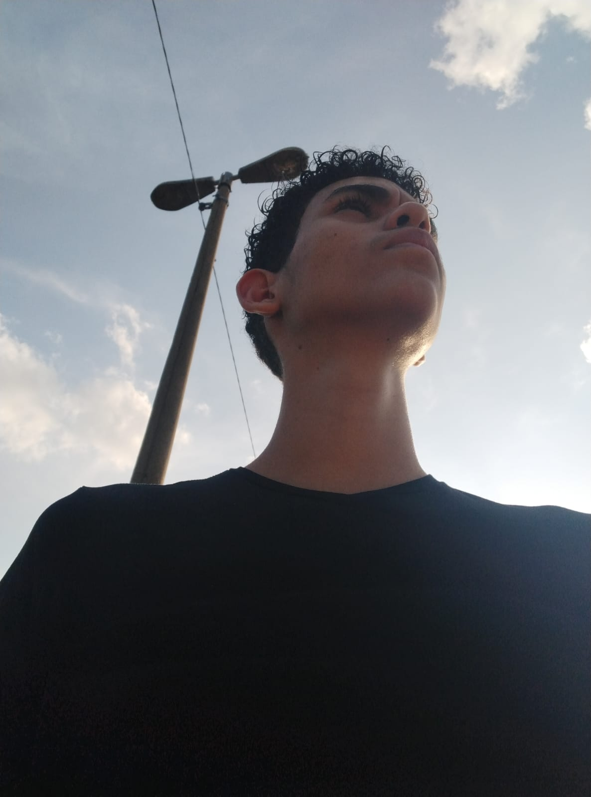

ATIVIDADE PRÁTICA | HTML
QUEM SOU?
Gabriel Philippe Souza da Silva
Olá! Me chamo Gabriel Philippe, atualmente faz 1 ano que estou
na área da programação (Pretendendo ser Programador Full-stack).
Comecei nesta área, adentrando ao SENAI Shunji Nishimura e
cursando Desenvolvimento de Sistemas.
Quando eu tive minha primeira impressão com a programação, adorei muito e me dediquei
a evoluir estudando em casa, fazendo cursos e desafios!